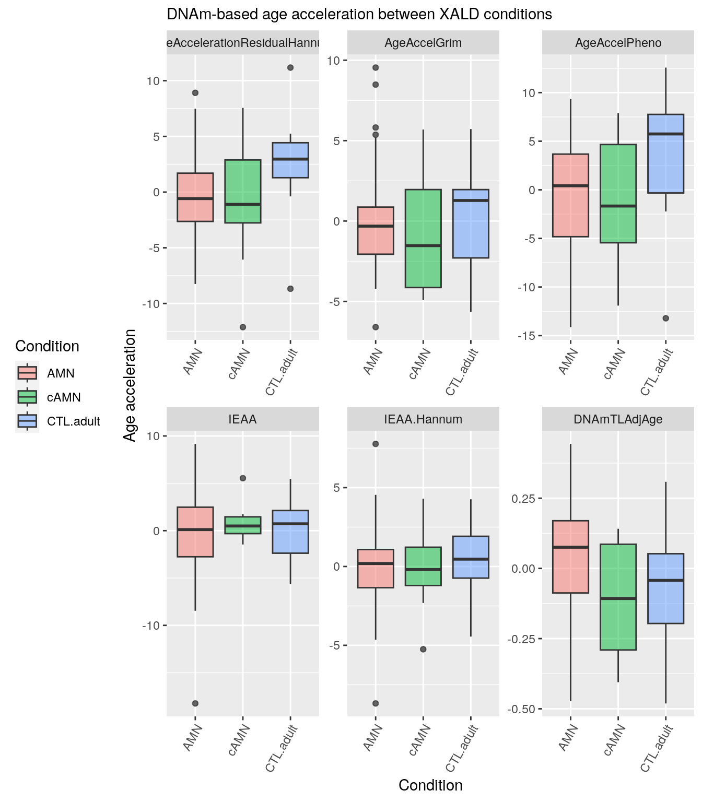

Code
library(data.table)
ss_adults<-readRDS("data/ss_Adults.rds")
ss_adults[,SID:=Sample_Name]
ss_adults$Sample_Name<-NULLMany different approaches have been used to predict age from epigenetic marks. Possibly the most popular being the method proposed by Horvath et. al. Epigenome-wide association study and epigenetic age acceleration associated with cigarette smoking among Costa Rican adults
We calculated all epigenetic aging biomarkers utilizing the online Horvath calculator (http://dnamage.genetics.ucla.edu/) with the advanced analysis option. The outcome of interest was the “AgeAccelerationResidual” or residuals resulting from a linear regression model where each DNA methylation clock is regressed on chronological age of each participant. We refer to all acceleration measures as Epigenetic Age Acceleration (EAA) for the specific clock and defined the residuals of the DNA methylation estimate of telomere length linearly regressed on chronological age as DNAmTL adjusted for age. A positive EAA indicates that the estimated epigenetic age is higher than the chronological age (increased biological aging) and a negative DNAmTL adjusted for age reflects a shorter telomere length. In addition, we tested Extrinsic EAA (EEAA) and Intrinsic EAA (IEAA) for Hannum’s and Horvath’s clocks, respectively51. The EEAA measure is associated with age-related changes in blood cell counts due to immune system aging and is calculated by upweighting the contributions of age-associated blood cell counts (naive cytotoxic T cells, exhausted cytotoxic T cells, and plasmablasts). The IEAA measure is independent of blood cell counts, represents intrinsic cellular aging, and is calculated by adding immune cell counts in addition to chronological age when calculating regression residuals. Analyses of epigenetic clocks included the 489 participants with high quality DNA methylation data.
From the results of the Epigenetic Age Clock calculator we are going to use the following:
AgeAccelerationResidualHannum Hannum et al. (2013):AgeAccelGrimLu, Quach, et al. (2019):AgeAccelPheno Levine et al. (2018):DNAmTLAdjAge Lu, Seeboth, et al. (2019):Data preparation:
library(data.table)
ss_adults<-readRDS("data/ss_Adults.rds")
ss_adults[,SID:=Sample_Name]
ss_adults$Sample_Name<-NULLss_all<-readRDS("data/SS.rds")
ss_all$Female=0
ss_all$Tissue="Blood PBMC"
ss_all[,SampleID:=Sample_Name]
ss_all$Sample_Name<-NULL
data.table::setcolorder(ss_all,"SampleID")
betas<-minfi::getBeta(readRDS("data/controls.rds"))
b<-data.table::as.data.table(betas,keep.rownames = T)
b[,ProbeID:=rn]
b$rn<-NULL
ss_horvath <- ss_all[SampleID %in% intersect(colnames(b),ss_all$SampleID),]
b<-b[,.SD,.SDcols=c("ProbeID",intersect(colnames(b),ss_all$SampleID))]
data.table::setcolorder(b,c("ProbeID",ss_horvath$SampleID))
data.table::fwrite(b,"data/controls_betas.csv")
data.table::fwrite(ss_horvath,"data/ss_controls.csv")source("R/functions.R")
ss_horvath<-ss_adults
ss_horvath$Female=0
ss_horvath$Tissue="Blood PBMC"
ss_horvath[,SampleID:=Sample_Name]
ss_horvath$Sample_Name<-NULL
data.table::setcolorder(ss_horvath,"SampleID")
b<-data.table::as.data.table(betas,keep.rownames = T)
b[,ProbeID:=rn]
b$rn<-NULL
data.table::setcolorder(b,c("ProbeID",ss_horvath$SampleID))
data.table::fwrite(b,"data/adult_betas.csv")
data.table::fwrite(ss_horvath,"data/ss_adults.csv")Now this data is sent to the horvath calculator and these are the results:
clock_adults <- data.table::fread("data/DNAmAgeCalcProject_2124_Results.csv")
clock_ctl <- data.table::fread("data/DNAmAgeCalcProject_2638_Results.csv")acc<- c(names(clock_ctl)[names(clock_ctl)%like%"AgeAccel"],c("IEAA", "IEAA.Hannum"))
cols <- c("SID",acc,"DNAmTLAdjAge")
cols[1] "SID" "AgeAccelerationResidualHannum"
[3] "AgeAccelGrim" "AgeAccelPheno"
[5] "IEAA" "IEAA.Hannum"
[7] "DNAmTLAdjAge" clock<-rbind(clock_adults[,.SD,.SDcols=cols],clock_adults[,.SD,.SDcols=cols])ss_all<-readRDS("data/SS.rds")
ss_all[,SID:=make.names(Sample_Name)]
samples <- intersect(clock$SID,ss_all$SID)
merge(clock,ss_all[,.SD,.SDcols=c("SID","Condition")], by=c("SID"))->dt
dt_long <- melt(dt,id.vars = c("SID","Condition"))library(ggplot2)
p2<-ggplot(dt_long, aes(x=Condition, y=value, fill= Condition)) +
geom_boxplot(aes(fill=Condition),outlier.fill="ivory",alpha = 0.5) +
# scale_fill_manual(ys=levels(col_subclass)) +
# geom_jitter(#color=pdata$color,
# size=0.1,show.legend = TRUE,
# alpha=0.2) +
#theme_ipsum() +
theme(
legend.position="left",
plot.title = element_text(size=11)
) +
ggtitle("DNAm-based age acceleration between XALD conditions") +
xlab("Condition")+
ylab("Age acceleration")+
scale_x_discrete(guide = guide_axis(angle = 60))+
facet_wrap(as.formula(paste("~ variable" )),ncol = 3,scales="free")
p2
This results suggest age acceleration for the controls in the extrinsic measures. This differences seem to disappear in the intrinsic approach where cell count of different cell populations is taken into account on the regeresion model.